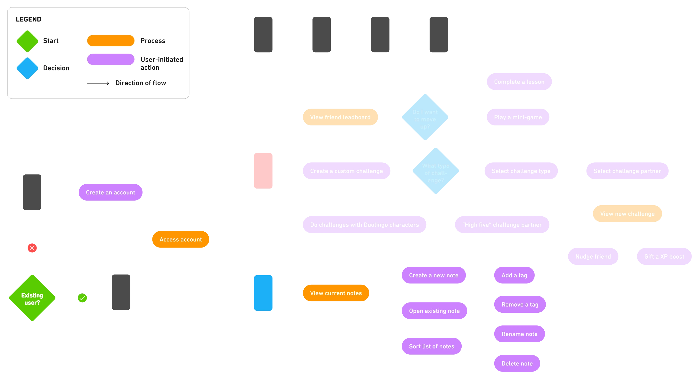

Duolingo
Creating engaging and research-supported user experiences for language learning.
+ Case Study
+ UX/UI
+ Product Design
As part of my Masters studies in UX and service design, I explored the process of improving the user experience of mobile-assisted language-learning (MALL) apps — specifically, examining the functionality of
Duolingo and its features. This case study introduces two new concepted features:
Duolingo Notes and
Learning with Friends. Supplemented by research on MALL apps, and supported by data derived from user interviews/testing, the
features provide an intuitive and fresh approach to learning languages through engaging methods.
PDF version of the Duolingo case study:

MALL 101
Mobile-assisted language learning (or MALL for short) is a teaching method for language studies that integrates mobile technology (ex. phones, tablets, personal digital/AI assistants). While MALL apps allow users to learn at their own pace and brush up on skills without needing a classroom setting, linguistics researchers have noticed that designers are ignoring the basic fundamentals of language learning theory. Duolingo is no exception — the app strongly promotes itself as a
service that adheres to international learning standards for its courses, but it exhibits signs of the exact issues that are highlighted by researchers.
Key takeaways from research:
Vocabulary üìö
Duolingo relies too much on teaching vocabulary in isolated contexts and doesn’t provide any information on how to apply the words/phrases in real-life contexts.
Error Assistance ⛔
There is little to no instruction on grammar and the rules of the language, leading learners to develop their own understandings through trial/error.
Skill Matching üìà
Many apps claim that their content is suitable for learners of all levels, however there is no evidence to support this statement.
Gamification üéÆ
Duolingo’s high level of gamification can be a strong motivator for consistency, however this technique doesn't always prove to be useful for all learners.
From here, the first problem statement was generated:
How can we design MALL apps
that allow users to learn languages through methods that are supported by linguistics research and engaging
for long-term learning?
Connecting with Users
To better address the topic of Duolingo’s current user experience, I gathered feedback and opinions from a group of Duolingo users in the form of interviews. Four (4) participants agreed to be part of the study, providing information on their experiences and suggestions for improvement. Participants were selected using the criteria that they were using a MALL app to learn a language, with the common app being Duolingo.
The interviews revealed the following insights:
- Users unanimously agreed that the app doesn't provide explanations for mistakes and forced learners to make their own assumptions.
- A way to record lessons concepts and languages rules for future use was a commonly-mentioned idea for improvement, as it matched the learning style of several participants.
- Some users weren't as motivated by the current state of gamified elements (ex. leaderboards), but believed there to be potential for improvements that could encourage them to be more motivated.
- The app could benefit from more interactions with added friends, given the current state is highly lacking and renders the concept of having friends useless.
THE NEW PROBLEM STATEMENT:
How can we create engaging and research-supported user experiences for Duolingo?
WHY THE CHANGE?
By addressing a smaller portion of the app, as opposed to trying to change everything, I could achieve a solution that focused on improving engagement through research-supported methods and was more feasible for a solo designer with my current timeline.
Prioritizing Changes
Given the variety of issues noted by both Duolingo users and linguistics researchers, the next step was to identify and prioritize changes that could be made to the app's design. While I did have an interest in re-working lesson formats and learning content, I didn't have access to the databases and lesson structures used by Duolingo; this would require the assistance of a linguistics expert, which wouldn't be feasible for this project. However, it would be possible to develop
engaging features outside of the lessons to provide an improved user experience.
Designing a service blueprint for language learning apps to visualize the entire system's connections.

Identifying changes based on feedback from user interviews and current issues through a priority matrix.
Prototype #1: Duolingo Notes
The integrated note-taking system, titled
Duolingo Notes, is the first of two features that I chose to implement as a solution to my revised problem statement and research. The feature is based on the concept of students writing their own notes to assist with learning, as note-taking is encouraged by every educational system and comes in various methods (ex. Cornell notes). Duolingo Notes uses the same visual style and interactions as a basic
notepad or notes app, as found on many phones. Tags can be added to categorize notes, completely user-controlled and definable according to their needs. Not only does a note-taking system better help users retain learning material, but also re-introduces habits that were present during their education.
User Flow:

Prototype #2: Learning With Friends
Learning with Friends is the second feature for this case study, focusing on expanding the current system for using Duolingo with added friends. It was noted that although Duolingo allows you to add friends, there isn’t much to do with them aside from app-controlled challenges/quests and maintaining a streak; conversely, having no friends on the app means users miss out on collaborative learning experiences. With the expanded system, users can now
select custom challenges and invite their friends to participate; healthy competition and rivalry is encouraged through a friends-only leaderboard.
The feature also caters to users who don't have added friends, enabling the app's cast of characters to step forward as challenge/quest partners. The progress made by the app’s characters would be dependent on their personalities. For example, Zari is depicted as a studious person who is eager to learn; she is more likely to contribute more to a quest than someone like Junior, who is depicted as a young child and easily distracted by other interests.
User Flow:
Visual Interface
Duolingo is a highly visual brand, relying on bright colours, rounded typography and shapes, cartoon-like characters and a sense of approachability that makes learning fun. Given I was designing the new features as an extension of what already exists, it was important to replicate the Duolingo interface as closely as possible. Although Duolingo's brand kit provided visual guidelines for its material, many interactive elements were designed by hand. Using the Developer Console, I
was able to find high-quality SVGs of icons and images within the code structures that were native to the Duolingo UI. Layout designs and placement of elements referenced screenshots of the app's Android version.
Gathering icons and imagery from the Duolingo web version.
User Testing
The prototypes for Duolingo Notes and Learning with Friends were tested by a group of users who had existing knowledge of Duolingo and language learning apps. Each tester was given a series of tasks to complete using a combined Figma prototype with both features. The ease of use and any difficulties experiences were evaluated using a testing rubric with a section for notes/feedback; testing was done both syncronously and asyncronously, depending on the availabilities of the
tester.
Duolingo Notes:


Duolingo Notes:


Across both prototypes, opinions were highly positive with testers expressing interest in a possible implementation of the new features. Testers experienced near to no difficulties with Duolingo Notes; the only suggestion provided was to change the text input area to a box instead of per line. Greater difficulties were noted when toggling between the modes in Learning with Friends; feedback suggested a change in the design of the toggle, which would assist in the ability to
visually recognize and associate the element with switching modes.


ABOVE: Original vs. re-designed version of the toggle to switch between learning with friends and learning with the app's characters.
LEFT: Original vs. re-designed text input areas for Duolingo Notes.
Final Thoughts
Taking on the challenge to analyze Duolingo and language learning apps was one that I thoroughly enjoyed throughout the four-month span of this project. While my initial plans had been to improve on the learning content, I found myself more interested in suggesting improvements to features outside of the lessons that could still contribute to a more positive and engaging user experience. Through user feedback and testing, it was clear that learners view Duolingo as a strong asset
for learning languages; however, many feel that the app lacks a personalized touch and hinders their ability to customize their learning journeys. With the integrated notes system and more ways to learn with friends, the control is placed back into the users' hands; this was ultimately my bigger goal:
to help learners grow a passion for learning languages in a way that is engaging, intuitive and fun.
(Now, remember to do your daily Duolingo... or Duo will hunt you down!)